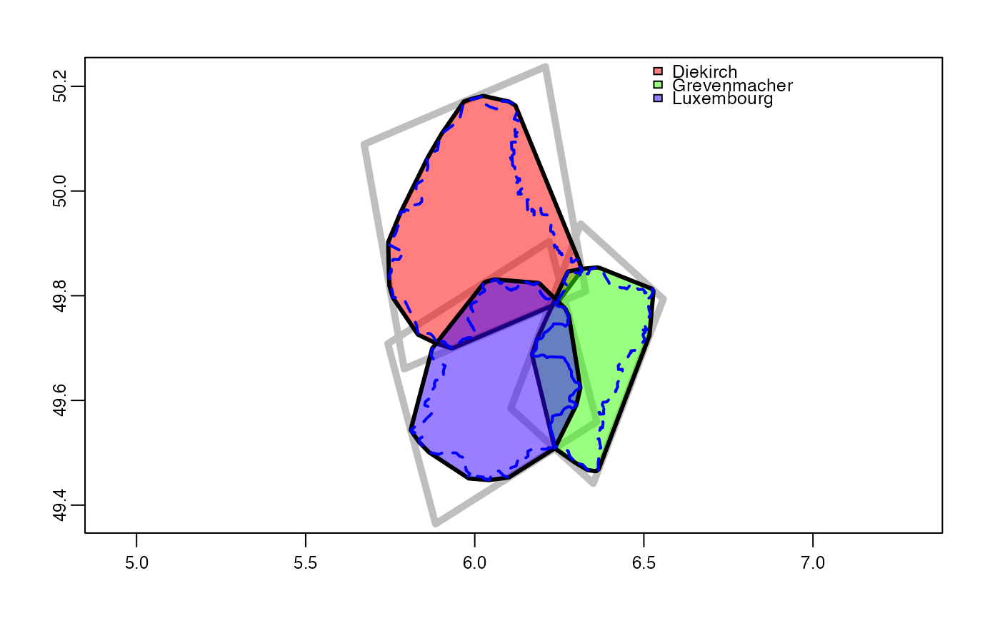
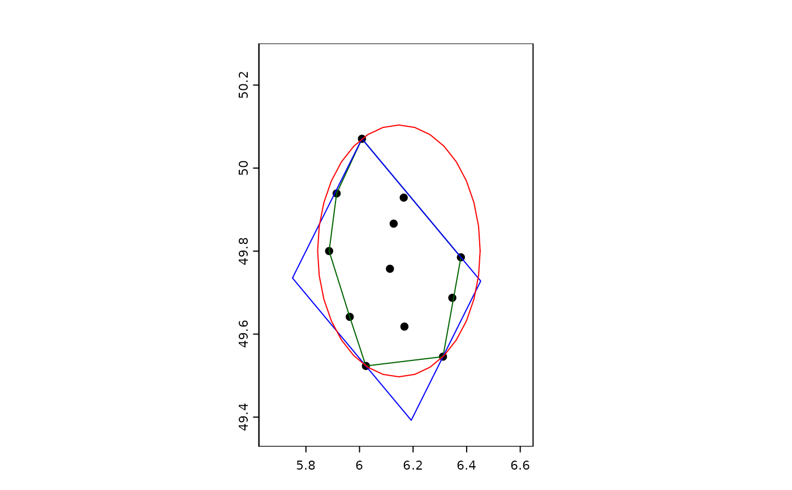

convhull.RdCompute hulls around SpatVector geometries. This can be the convex hull, the minimal bounding rotated rectangle, the minimal bounding circle, or a concave hull. The concaveness of the concave hull can be specified in different ways.
The old method convHull is deprecated and will be removed in a future version.
# S4 method for class 'SpatVector'
hull(x, type="convex", by="", param=1, allowHoles=TRUE, tight=TRUE)SpatVector
character. One of "convex", "rectangle", "circle", "concave_ratio", "concave_length"
character (variable name), to get a new geometry for groups of input geometries
numeric between 0 and 1. For the "concave_*" types only. For type="concave_ratio" this is the edge length ratio value, between 0 and 1. For type="concave_length" this the maximum edge length (a value > 0). For type="concave_polygons" this specifies the maximum Edge Length as a fraction of the difference between the longest and shortest edge lengths between the polygons. This normalizes the maximum edge length to be scale-free. A value of 1 produces the convex hull; a value of 0 produces the original polygons
logical. May the output polygons contain holes? For "concave_*" methods only
logical. Should the hull follow the outer boundaries of the input polygons? For "concave_length" with polygon geometry only
SpatVector
A concave hull is a polygon which contains all the points of the input. It can be a better representation of the input data (typically points) than the convex hull. There are many possible concave hulls with different degrees of concaveness. These can be created with argument param.
The hull is constructed by removing the longest outer edges of the Delaunay Triangulation of the space between the polygons, until the target criterion param is reached. If type="concave_ratio", param expresses the ratio between the lengths of the longest and shortest edges. 1 produces the convex hull; 0 produces a hull with maximum concaveness. If type="concave_length", param specifies the maximm edge length. A large value produces the convex hull, 0 produces the hull of maximum concaveness.
p <- vect(system.file("ex/lux.shp", package="terra"))
h <- hull(p)
plot(p)
lines(h, col="orange")
hh <- hull(p, "convex", by="NAME_1")
lines(hh, col="purple")

pts <- centroids(p)
plot(pts, ext=ext(p)+0.1)
lines(hull(pts, type="convex"), col="darkgreen")
lines(hull(pts, type="rect"), col="blue")
lines(hull(pts, type="circle"), col="red")
